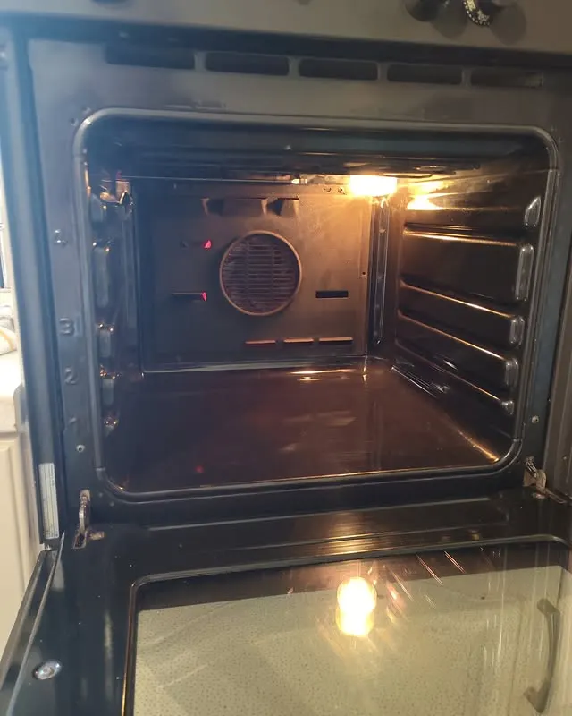
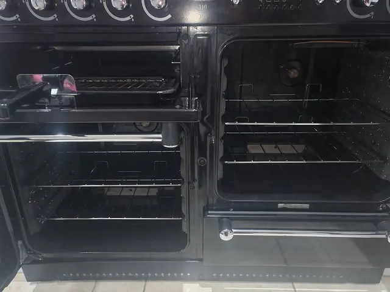
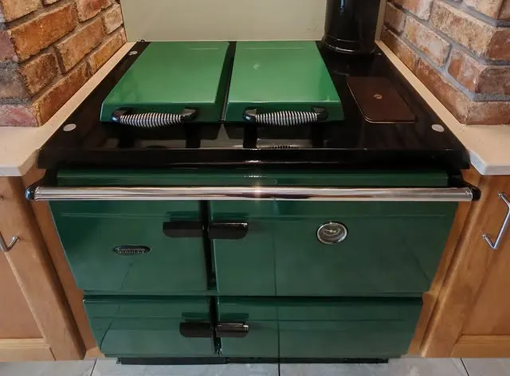

Serving Omagh & Fermanagh, Castlederg & the Clogher Valley — from a local cleaner who has been looking after his regulars' ovens for years, including the old ones that still have plenty of life in them.
Call 07384 708672Or email ovencleantf@outlook.com · Instagram @ovencleantyronefermanagh

A freshly cleaned oven — real work from their own page.
Exactly as the business lists them — nothing added.
Regular rounds in and around Omagh, including Fintona, Beragh and Carrickmore.
West Fermanagh and across the county, for new and returning customers.
Also serving Castlederg and the Clogher Valley.
His regulars start booking their Christmas cleans as early as September, and December spaces go fast. If you are a returning customer — or would like to become one — get in touch sooner rather than later.

A smart black gas Rangemaster, cleaned in Omagh.

Range cookers, old and new — cleaned with care.
Call, email or message on Instagram — whichever suits you best.
Message on Instagram